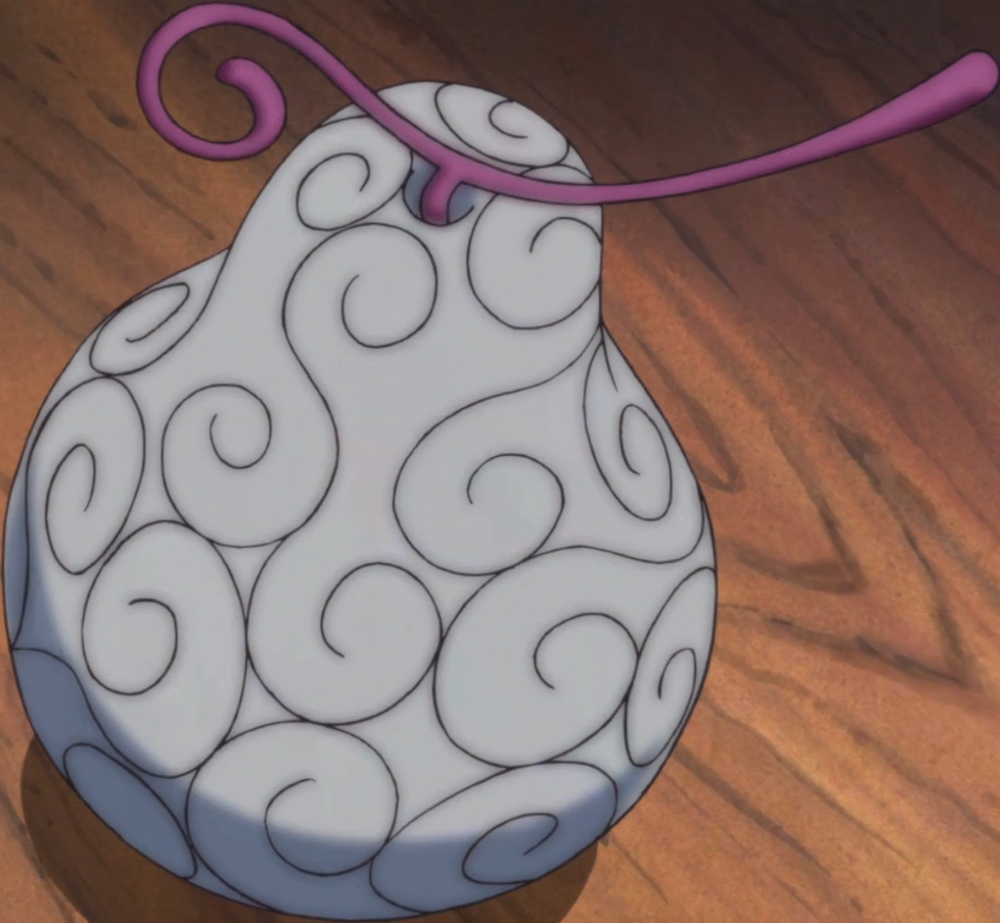

About page
Devil Fruit Encyclopedia
Ito Ito no Mi


The Ito Ito no Mi is a Paramecia-type Devil Fruit that allows the user to create and manipulate strings, making the user a String Human
- one of this ability's weaknesses is that the user cannot travel mid-air
- if "awoken", the Ito Ito no Mi's power also allows the consumer to transmute parts of the surrounding area